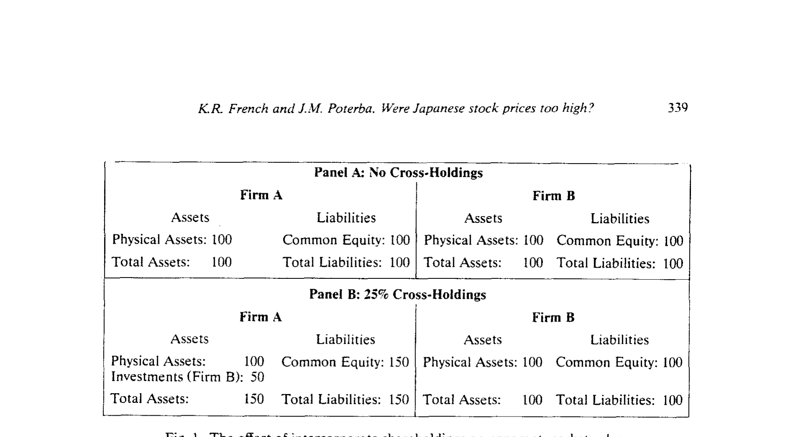
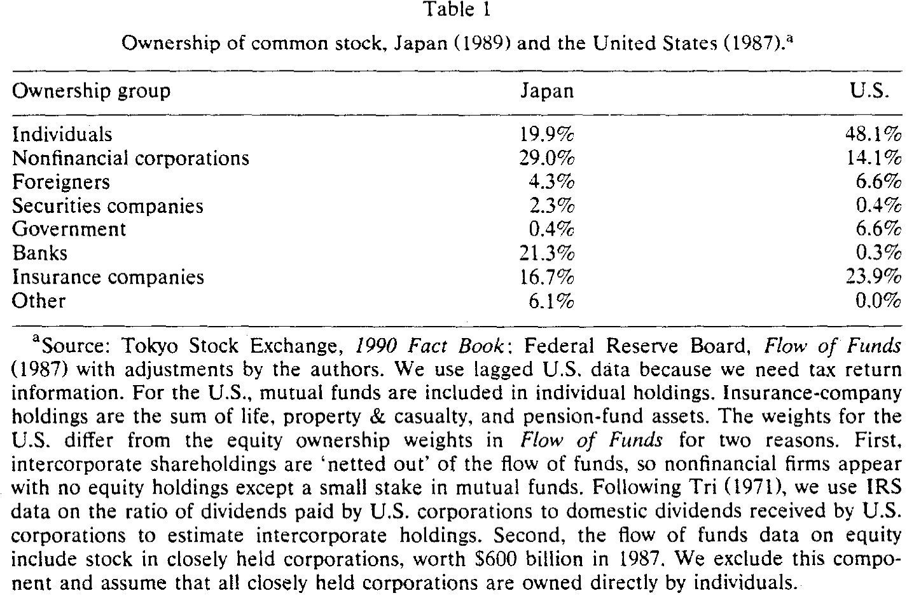
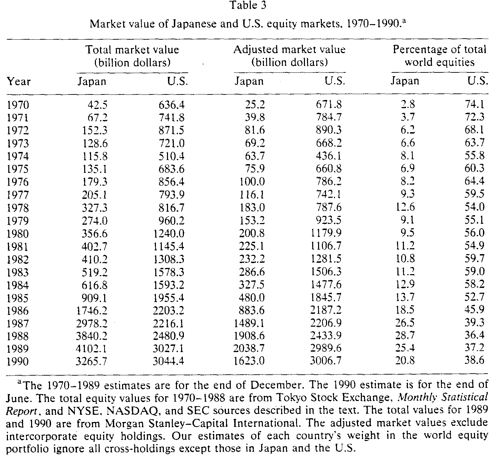
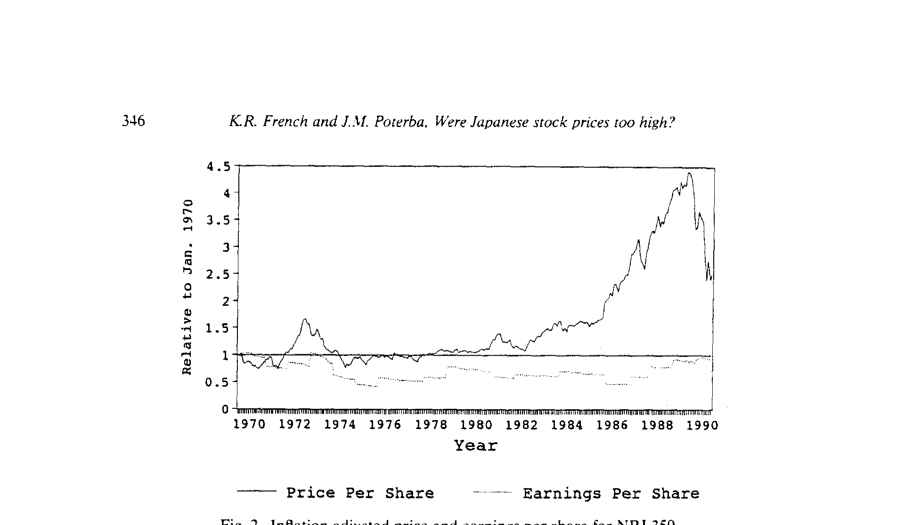
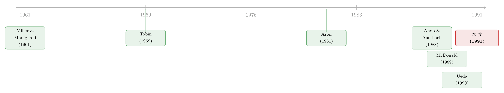

日本股价'太高了'吗？——半部账本算得清，另一半算不清
本文读的是 French & Poterba (1991, Journal of Financial Economics)：1980 年代末日本股市那骇人的高市盈率，大约一半能用会计与交叉持股的口径差异抹平——若按美国会计规则，1989 年日本 P/E 会是 32.6 而非 53.7。但剩下那一半——1986 年市盈率的凭空翻倍、1990 年的崩跌——无论怎么调贴现率和增长预期，都对不上账。这是一篇极其克制的论文：它没有喊"泡沫"，它只是诚实地告诉你，哪一半算得清，哪一半算不清。
1 一个让所有人坐立不安的数字
先把场景摆出来。1984 到 1989 这五年，日经指数（Nikkei Index）以年均 27.5% 的速度往上窜，市盈率（price-earnings ratio, P/E）从 37.9 一路爬到 70.9。70 倍的市盈率是什么概念？同期美国市场十几倍。于是结论几乎是脱口而出的：日本股票疯了，这是泡沫。
证据似乎也很配合。外国投资者在 1980 年代的最后五年里，每一年都是日本股票的净卖出方。然后，1990 年日经一年之内暴跌 39%，市盈率掉回 58.2。看上去，一切都坐实了——那些喊"泡沫"的人赢了。
但 French 和 Poterba 偏偏要在这个几乎已成定论的地方停下来，问一句别扭的话：我们怎么知道它"高"？ 70 倍的市盈率，到底是市场疯了，还是我们手里那把尺子本身就刻错了？
这正是全文的张力所在，也是它最聪明的地方。作者很早就坦白：在某种意义上，"日本股价是否非理性地高"这个问题是无法回答的——任何一条价格路径，你总能用某一组投资者预期把它"合理化"出来。这些预期是看不见的。所以他们换了一个能做的问题：先把尺子校准，看看校准之后，那个吓人的数字还剩多少；剩下的那部分，再去搜寻有没有"贴现率变了"或"增长预期变了"的痕迹。
2 第一刀：市场到底有多大？
要谈"贵不贵"，得先谈"大不大"——而这里就埋着第一个被普遍误读的数字。
Morgan Stanley-Capital International 的数据说，1989 年底日本股市比美国大 36%。听起来日本已经是世界第一了。但作者指出，这个对比有一个致命的口径问题：交叉持股（intercorporate shareholdings）造成的重复计算。
这一步是整篇论文的"题眼"，作者用一个极简的例子讲透了它。设想两家全股权公司 A 和 B，各有价值 $100 的实物资产，没有任何相互持股，市场上流通的股权总值是 $200。现在 A 增发 $50 新股，拿这笔钱买下 B 一半的股权。会发生什么？A 的市值变成 $150（$100 实物资产加上手里 $50 的 B 股票），B 的市值纹丝不动还是 $100。于是表观市值变成了 $250——可底层真实生产性资产，从头到尾都只有 $200。

Figure 1: The effect of intercorporate shareholdings on apparent market value
凭空多出来的 $50，就是 B 的一半资产被同时计进了 A 的股权和 B 的股权。如何把这层水分挤掉？只数公司部门之外的人手里的股权就行：公众持有 $150 的 A 加 $50 的 B，正好是 $200，恰好等于真实资产。
把这个直觉写成公式，就是流通在外（outside）的股权价值：
$$V_{Outside} = (1-s)\cdot V_{Total}$$
其中 \(s\) 是被公司部门持有的股份比例，\(V_{Total}\) 是按传统方式（每家公司股数乘股价再加总）算出来的总市值。在上面的例子里 \(s = 50/250 = 0.2\)，于是 \((1-0.2)\times 250 = 200\)，水分一滴不剩。
接着，一个自然的问题是：日本的 \(s\) 到底有多大？答案触目惊心。如表 1 所示，1989 年日本市场上，个人只直接持有约 19.9%，而各类公司——非金融企业（29.0%）、银行（21.3%）、保险公司（16.7%）——加起来攥着将近三分之二的股权。反观美国，个人持有近一半（48.1%），企业间持股只有七分之一。

Table 1
丰田就是活标本：1988 年底，丰田自己持有 4 家上市公司逾 40% 的股权、22 家公司至少 5% 的股权（大多是它的供应商）；反过来，几家银行又共同持有丰田近 30% 的股票。这种你中有我、我中有你的"持ち合い"（mochiai），把整个市场织成了一张相互计数的网。（关于这张网如何反过来塑造日本公司的治理与现金行为，可参见《把老板当成人质：日本财团里那台"会换挡"的治理机器》与《现金为什么堆在日本公司的账上？》。）
把水分挤掉之后，结论彻底反转了。如表 3 所示，尽管未经调整的数字显示 1986–1989 年间日本市场年年比美国大，但日本流通在外的股权，从来没超过美国的 80%。1989 年底，按调整后的口径，日本只占世界股权组合的 25.4%，美国占 37.2%。到 1990 年 6 月，日本进一步跌到 20.8%，美国升到 38.6%。所谓"日本已是世界第一大市场"，本身就是一个会计幻觉。

Table 3
3 第二刀：把市盈率"翻译"成同一种语言
市场规模的水分挤掉了，但真正让人睡不着觉的是那个 50 倍、70 倍的市盈率。这里，作者动了第二刀——而这一刀更精细。
很多分析师把日本的高 P/E 直接当成"非理性"的证据；另一些人则说，那不过是日本会计惯例的产物。谁对？作者的办法是：把日本的市盈率，逐项翻译成美国口径，看看翻译完之后还剩多高。
三个因素让日本的报告 P/E 系统性地偏高：
其一，合并与交叉持股。 美国用合并报表（consolidated earnings），把子公司利润并进来；日本市场分析却以母公司单独报表（unconsolidated earnings）为主，NRI 350 指数的分母用的就是它。问题在于：股价反映的是母公司对子公司利润的完整索取权，而单独报表里只认子公司分回的股利。分子（价格）算全了，分母（盈利）只算了一部分——市盈率自然被系统性地抬高。
这正是前面那把"交叉持股"刀的延伸。作者做了两步调整。第一步，把价格里来自交叉持股的那部分剥掉：
$$P^* = (1-\mu s')P$$
这里 \(s'\) 是非金融企业（NFC）持有的市场份额，\(\mu\) 等于（全部流通股价值）/（非金融企业流通股价值）。第二步，把母公司盈利里的"企业间股利"也减掉：
$$E^* = (1-s'\mu d)E$$
\(d\) 是股利支付率。两步一合，就得到了调整后的市盈率——这也是全文最核心的一个方程：
数字有多大？1990 年 8 月，支付率 \(d = 0.267\)，\(\mu s' = 0.391\)，调整因子是 0.680。一乘下来，报告的市盈率从 36.6 被砍到 24.9。而且——这一点很关键——交叉持股对 P/E 的拉抬效应随时间增强，因为 1980 年代交叉持股本身在上升。
其二，特别准备金（special reserves）。 日本税法允许企业每年为退休金、产品退货、坏账等未来支出预提准备金。日本工人六十岁左右退休，雇主往往一次性支付相当于其数倍年薪的退休金，企业可以为此提取相当于"全员清算退休"应付额 40% 的准备金。由于日本要求税务报表与财务报表一致，这些预提同时压低了账面盈利。Aron (1988) 给出了把这部分加回去的办法——本质上是把税后盈利还原到"没有预提"的状态。这又抬高了日本相对美国的报告 P/E。
其三，折旧惯例的差异。
三刀砍下来，结论是清晰的：会计差异能解释 U.S. 与 Japan 之间大约一半的长期 P/E 落差。若 1989 年日本企业改用美国会计规则，市盈率会是 32.6 而不是 53.7。
4 但真正关键的一步：账本解释不了"那次翻倍"
到这里，故事似乎可以收尾了——一半的差距是会计幻觉。可作者偏偏要把刀口对准自己：会计差异能解释长期的落差，但它能解释 1980 年代后半段那次戏剧性的攀升吗？
不能。而且作者给出了两个干净利落的理由。
第一，会计规则那几年是在趋同，而不是发散。 Aron (1981, 1988) 记录到，日本的会计准则改革在 P/E 高涨那段时间里，反而缩小了日美之间的会计差异。如果差距在缩小，它怎么可能制造出市盈率的扩张？
第二，也是最有力的一击——那次上涨是"价格涨出来的"，不是"盈利掉出来的"。 如图 2 所示，日本 P/E 从 1985 年的 29.4 涨到 1989 年的 53.7，主导力量是股价，不是盈利的萎缩。实际每股价格在 1970–1980 大致持平，1980–1985 缓慢爬升，然后在 1986–1989 以年均 27.1% 的速度起飞；而实际每股盈利在整个 1970–1990 期间基本是平的。

Figure 2: Inflation adjusted price and earnings per share for NRI 350
具体到那个最刺眼的数字：1986 年，日本 P/E 从 29.4 一年之内翻倍到 58.6，而美国同期只从 15.4 升到 18.7，涨了 21%。1986 年盈利确实掉了 28%，帮着把比率推了上去——但接下来三年盈利分别增长 26%、30%、18%，市盈率却依然赖在 50 以上。一个会计调整，断然解释不了这种"盈利在涨、市盈率不跌"的执拗。
于是反转出现：会计这本账，算得清长期的水分，却算不清 1986 年那一跳。剩下的解释，只能去基本面里找——要么是要求回报率（required return）下降了，要么是增长预期上升了。按戈登增长（Gordon growth）的直觉，市盈率大致与 \(1/(r-g)\) 同向：贴现率 \(r\) 一降、增长 \(g\) 一升，P/E 就会膨胀。作者于是反过来做了一道"校准题"：要让市盈率翻一倍，\(r\) 和 \(g\) 得变多少？
答案是——变得不近人情。作者发现，要解释 1985 年之后的暴涨，对增长或通胀预期的假设必须达到相当极端的程度，才勉强凑得上。换句话说，他们找不到任何一个量级合理的贴现率或增长预期的变化，大到足以解释那次上涨。
唯独 1990 年的下跌，反而比较好解释：那一年日本利率显著且同步地上升了——贴现率一抬，价格下来，顺理成章。一个有意思的不对称：崩跌讲得通，暴涨讲不通。
顺便，作者还顺手关掉了一扇旁门：有人说日本的高回报、高 P/E 是高杠杆撑起来的。可表 4 的债务/股权比（按债务账面值除以股权市值）显示，日本这个比率从 1970 年的 1.63、1972 年的 2.23，一路降到 1989 年的 0.45——在 1986–1989 年间反而显著低于美国。高杠杆的故事，对不上。
5 文献脉络
把这篇论文放回它的坐标系，会看得更清楚。
它的根，扎在两支古典传统里。一支是 Miller & Modigliani (1961) 的股利—增长估值框架——市盈率不过是未来现金流贴现的一个比值，这给了"用基本面解释价格"以理论地基。另一支是 Tobin (1969) 的 q 理论，把市场价值与重置成本挂上钩，为日后所有"市场是不是太贵"的争论提供了语言。

到了 1980 年代，日本市场的反常把一批人逼上了同一个问题。Aron (1981, 1988) 在 Daiwa 的报告里第一个系统地问"日本 P/E 是不是太高"，并给出了会计调整的工具箱——本文的准备金调整直接借自他。Ando & Auerbach (1988, 1990) 从资本成本（cost of capital）的角度切入日美比较。McDonald (1989) 则把"mochiai 效应"——交叉持股——量化呈现，本文的市场规模调整正是站在他的肩上。几乎同时，Ueda (1990) 用与本文一模一样的标题（"Are Japanese stock prices too high?"）从另一条路逼近同一个谜；而 Boone & Sachs (1989) 把焦点放在地价上，问"东京真值四万亿美元吗"。
French 和 Poterba 的位置，是把这些零散的调整——市场规模、合并口径、准备金、折旧、杠杆——收拢进同一个会计框架，再用一道校准题把"基本面能不能解释"逼到墙角。他们的贡献不在于给出一个"是泡沫"或"不是泡沫"的判决，而在于干净地划出了那条线：线的一边，是会计能抹平的一半；线的另一边，是任何合理基本面都搬不动的另一半。这种克制，本身就是一种力量。（关于"泡沫"这个词为何如此难以被严谨地定义，可参见《泡沫：一个我们至今定义不清、却又绕不开的词》与《泡沫这个词，为什么能让一位资深教授拍案而起？》。）
至于外国投资者那条"年年净卖出"的线索，本文只把它当作"市场外的一种感知"，而非证据。但它本身是一个迷人的现象：外资究竟是先知，还是只是偏好作祟？这正是后来一整支文献追问的事（参见《外资真是"蝗虫"吗？——一次跨 30 国的长期投资体检》）。
6 评论与延伸（Q&A + 研究方向）
(a) 几个可能的疑问
Q：会计差异既然能解释一半的 P/E 落差，为什么解释不了 1986 年的翻倍？
因为两件事的"时间"对不上。一是日本会计准则在那几年是在向美国趋同，差异在缩小，按理应让 P/E 落差变小而非变大；二是那次翻倍是价格涨出来的，实际每股盈利基本是平的，而会计调整动的主要是盈利口径。一个静态的口径差，解释不了一次动态的价格起飞。
Q：交叉持股调整到底在"挤"什么水分？
挤的是重复计数。A 公司用增发的钱买了 B 公司一半股权，B 的这部分资产就同时进了 A 的股权和 B 的股权，被算了两次。只统计公司部门之外的人持有的股权，才等于底层真实资产的价值。日本企业相互持股极深，所以这层水分远比美国厚。
Q：外资连续净卖出，难道还不能说明日股被高估？
不能。作者非常谨慎，只说外资的持续抛售"与日本股市被高估的广泛感知一致"，并没有把它当成证明。感知不是基本面，净卖出也可能源于本国配置、汇率、偏好等一堆原因。这是一条线索，不是一份判决书。
Q：高负债能不能同时解释日本的高回报和高市盈率？
对不上。日本的债务/股权比（账面债务÷股权市值）从 1970 年代的 2 以上一路降到 1989 年的
0.45，在 1986–1989 年间反而低于美国。高杠杆的故事在数据面前站不住。
Q：那这篇文章到底证明了日股是不是泡沫？
都没有。它既没能用基本面解释那次暴涨，也无法证明它是非理性的泡沫。作者开篇就承认，这个问题"在某种意义上无法回答"——因为任何价格都能被某组预期合理化。文章的价值在于精确地告诉你：会计能解释一半，剩下那一半，谁也搬不动。
Q：那剩下那一半，作者最后甩给了谁？
结论一节把目光投向了地价升值——日本地产在那几年同样疯涨。但作者也没把它当成完整答案，更像是一个"下一站请看这里"的路标，而非闭环的解释。
(b) 几个可能的研究问题与提案
1. 交叉持股调整后的"真实市值权重"与跨境资本流动。 【经济故事】本文证明未调整的市值会把日本这种交叉持股深的市场系统性地高估。今天全球指数（MSCI、FTSE）的国家权重，以及由此驱动的被动资金配置，仍以表观市值为基础。如果对交叉持股深的市场（日本、韩国、部分新兴市场）做 French-Poterba 式调整，国家权重会怎么变？被动资金的"错配"有多大？ 【可行性】中。需要各国交叉持股数据（可从 FactSet/Refinitiv 所有权数据库近似），识别上靠口径重构而非因果，doable，但交叉持股的完整测度在数据上有挑战。
2. 外资从"被感知高估"的市场撤离，是否预示流动性恶化？ 【经济故事】本文记录到外资在日股高位连年净卖出。把这个现象搬到信用/股票市场的现代高频数据里：当外资从某一市场系统性流出时，该市场的流动性（买卖价差、价格冲击）是先于价格、还是同步恶化？这关乎"聪明钱撤离→流动性枯竭"这条传导链是否真实存在。 【可行性】中/高。外资持仓有 TIC、各国交易所月度数据；流动性可用日内数据构造。识别上可借助外生的指数重分类或资本管制变动事件。优先方向，doable。
3. 把"会计调和后的 P/E"当作跨国收益预测信号。 【经济故事】如果不同国家的报告 P/E 因会计口径而系统性偏高/偏低，那么用统一口径调整后的 P/E，是否比原始 P/E 更能预测跨国的长期超额收益？本文给了一套可操作的调和方法，但只用在一个时点的"诊断"上，没拿去做横截面预测。 【可行性】中。需要长样本的跨国会计与价格数据（Compustat Global），方法是把口径差异参数化后做 panel 预测回归，doable，主要难点在准备金、合并口径等调整在大样本上的可比测度。
4. 交叉持股深度与公司债信用利差。 【经济故事】交叉持股不仅虚增股权市值，也改变了企业真实的资产负债结构与相互担保关系。一家深陷 mochiai 网络的企业，其公司债的信用利差是更低（隐性互保）还是更高（风险传染）？这把本文的股权口径问题，延伸到了信用市场。 【可行性】中。需匹配交叉持股网络数据与公司债二级市场利差，识别上可用网络中心度作为暴露度，并以行业冲击做外生变动。doable，数据匹配是主要成本。
7 我的判断
这篇论文最让我佩服的，是它的克制。在一个所有人都急着喊"泡沫"的时刻，作者偏偏先去把尺子校准，然后诚实地承认：校准之后，我既解释不了它，也证伪不了它。它没有为了一个抓人眼球的结论而过度伸张——这在今天看来近乎奢侈。
它的核心贡献，是把"日本股价是否太高"这个无法证伪的问题，转化成了一系列可操作的会计调和，并干净地标出了"基本面能解释"与"基本面解释不了"的边界。交叉持股那把刀——把表观世界第一大市场砍回到不足美国八成——尤其漂亮，它提醒我们：在谈论"贵不贵"之前，先确认你数的"市值"到底是不是真的。
对识别的担忧也是诚实的。第一，所有"基本面解释不了"的结论，都建立在"我们没找到足够大的贴现率/增长变化"之上——这是一个否定式的证据，本质上无法排除"存在我们没观测到的预期变化"。作者自己也承认这一点。第二，会计调整里有不少参数（支付率、准备金比例、折旧惯例）需要近似，调整因子 0.680 这类数字对假设有一定敏感性。第三，把 1990 年下跌归因于利率上升，是事后的"易于合理化"，与对 1986 年上涨"无法合理化"之间，存在一种不太对称的解释标准——崩跌总是比暴涨更容易找到借口。
后续我最想看到的，是把这套"会计调和 + 校准"的方法，从一次性的诊断，推向跨国、跨时的系统检验：如果统一口径之后，各国 P/E 的离散度大幅收敛，那将是对"市场被本国会计惯例系统性扭曲"这一命题的有力支持；反之，如果调和之后差距依旧顽固，那才真正把球踢回给了"基本面 vs. 情绪"的老问题。三十多年过去，这道题其实还没有真正结案。
参考文献
Ando, A. and A. J. Auerbach (1988). The cost of capital in the United States and Japan: A comparison. Journal of the Japanese and International Economies 2, 134–158.
Ando, A. and A. J. Auerbach (1990). The cost of capital in Japan: Recent evidence and further results. Journal of the Japanese and International Economies 4, 323–350.
Aron, P. (1981). Are Japanese P/E Multiples Too High? Daiwa Securities America, New York.
Aron, P. (1988). Japanese P/E Multiples: The Shaping of a Tradition. Daiwa Securities America, New York.
Boone, P. and J. Sachs (1989). Is Tokyo worth four trillion dollars? An explanation for high Japanese land prices. Unpublished manuscript, Harvard University.
French, K. R. and J. M. Poterba (1991). Were Japanese stock prices too high? Journal of Financial Economics 29(2), 337–363.
Hoshi, T., A. Kashyap, and D. Scharfstein (1991). Corporate structure, liquidity, and investment: Evidence from Japanese industrial groups. Quarterly Journal of Economics 106(1), 33–60.
McDonald, J. (1989). The mochiai effect: Japanese corporate cross-holdings. Journal of Portfolio Management, Fall, 90–94.
Miller, M. and F. Modigliani (1961). Dividend policy, growth, and the valuation of shares. Journal of Business 34(4), 411–433.
Tobin, J. (1969). A general equilibrium approach to monetary theory. Journal of Money, Credit, and Banking 1(1), 15–29.
Ueda, K. (1990). Are Japanese stock prices too high? Journal of the Japanese and International Economies 4, 351–370.